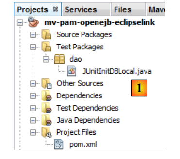
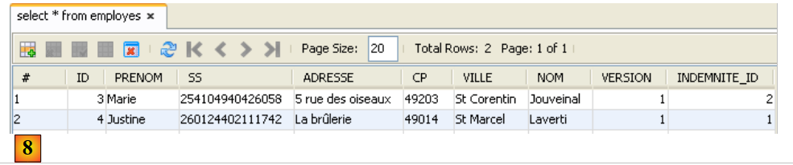
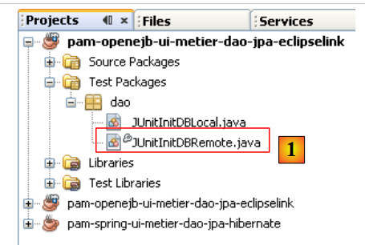
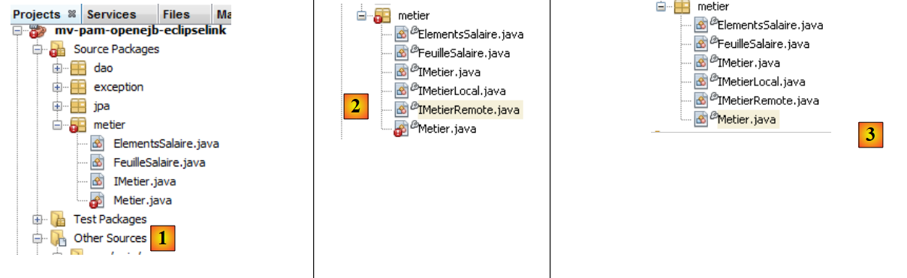
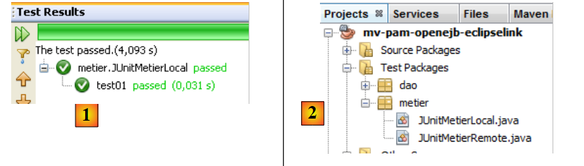
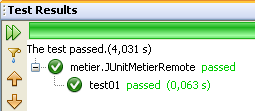
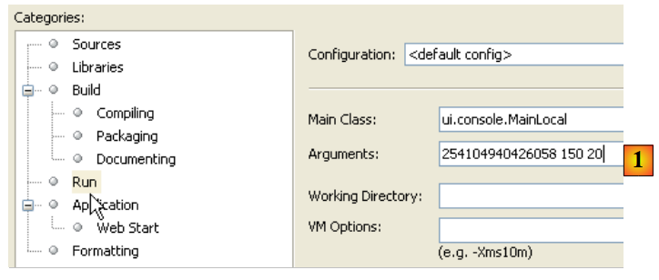

6. Version 2 : Architecture OpenEJB / JPA
6.1. Introduction aux principes du portage
Nous présentons ici les principes qui vont gouverner le portage d'une application JPA / Spring / Hibernate vers une application JPA / OpenEJB / EclipseLink. On attendra le paragraphe 6.2 pour créer les projets Maven.
6.1.1. Les deux architectures
L'implémentation actuelle avec Spring / Hibernate
 |
L'implémentation à construire avec OpenEJB / EclipseLink
 |
6.1.2. Les bibliothèques des projets
- les couches [DAO] et [metier] ne sont plus instanciées par Spring. Elles le sont par le conteneur OpenEJB.
- les bibliothèques du conteneur Spring et sa configuration disparaissent au profit des bibliothèques du conteneur OpenEJB et sa configuration.
- les bibliothèques de la couche JPA / Hibernate sont remplacées par celles de la couche JPA / EclipseLink
6.1.3. Configuration de la couche JPA / EclipseLink / OpenEJB
- le fichier [META-INF/persistence.xml] configurant la couche JPA devient le suivant :
- ligne 3 : les transactions dans un conteneur EJB sont de type JTA (Java Transaction API). Elles étaient de type RESOURCE_LOCAL avec Spring.
- ligne 9 : l'implémentation JPA utilisée est EclipseLink
- lignes 5-7 : les entités gérées par la couche JPA
- lignes 11-13 : propriétés du provider EclipseLink
- ligne 12 : à chaque exécution, les tables seront créées
Les caractéristiques JDBC de la source de données JTA utilisée par le conteneur OpenEJB seront précisées par le fichier de configuration [conf/openejb.conf] suivant :
- ligne 3 : on utilise l'id Default JDBC Database lorsqu'on travaille avec un conteneur OpenEJB embarqué (embedded) dans l'application elle-même.
- ligne 5 : nous utilisons une base MySQL [dbpam_eclipselink]
6.1.4. Implémentation de la couche [DAO] par des EJB
- Les classes implémentant la couche [DAO] deviennent des EJB. Prenons l'exemple de la classe [CotisationDao] :
L'interface [ICotisationDao] dans la version Spring était la suivante :
L'EJB va implémenter cette même interface sous deux formes différentes : une locale et une distante. L'interface locale peut être utilisée par un client s'exécutant dans la même JVM, l'interface distante par un client s'exécutant dans une autre JVM.
L'interface locale :
- ligne 6 : l'interface [ICotisationDaoLocal] hérite de l'interface [ICotisationDao] pour en reprendre toutes les méthodes. Elle n'en ajoute pas de nouvelles.
- ligne 5 : l'annotation @Local en fait une interface locale pour l'EJB qui l'implémentera.
L'interface distante :
- ligne 6 : l'interface [ICotisationDaoRemote] hérite de l'interface [ICotisationDao] pour en reprendre toutes les méthodes. Elle n'en ajoute pas de nouvelles.
- ligne 5 : l'annotation @Remote en fait une interface distante pour l'EJB qui l'implémentera.
La couche [DAO] est implémentée par un EJB implémentant les deux interfaces (ce n'est pas obligatoire) :
- ligne 1 : l'annotation @Stateless qui fait de la classe un EJB
- ligne 2 : l'annotation @TransactionAttribute qui fait que chaque méthode de la classe s'exécutera au sein d'une transaction.
- ligne 5 : l'annotation @PersistenceContext qui injecte dans la classe [CotisationDao] l'EntityManager de la couche JPA. Elle est identique à ce qu'on avait dans la version Spring.
Lorsque l'interface locale de la couche [DAO] est utilisée, le client de cette interface s'exécute dans la même JVM.
 |
Ci-dessus, les couches [metier] et [DAO] échangent des objets par référence. Lorsqu'une couche change l'objet partagé, l'autre couche voit ce changement.
Lorsque l'interface distante de la couche [DAO] est utilisée, le client de cette interface s'exécute habituellement dans une autre JVM.
 |
Ci-dessus, les couches [metier] et [DAO] échangent des objets par valeur (sérialisation de l'objet échangé). Lorsqu'une couche change un objet partagé, l'autre couche ne voit ce changement que si l'objet modifié lui est renvoyé.
6.1.5. Implémentation de la couche [metier] par un EJB
- La classe implémentant la couche [metier] devient elle aussi un EJB implémentant une interface locale et distante. L'interface initiale [IMetier] était la suivante :
On crée une interface locale et une interface distante à partir de l'interface précédente :
L'EJB de la couche [metier] implémente ces deux interfaces :
- lignes 1-2 : définissent un EJB dont chaque méthode s'exécute dans une transaction.
- ligne 7 : une référence sur l'interface locale de l'EJB [CotisationDao].
- ligne 6 : l'annotation @EJB demande à ce que le conteneur EJB injecte une référence sur l'interface locale de l'EJB [CotisationDao].
- lignes 8-11 : on refait la même chose pour les interfaces locales des EJB [EmployeDao] et [IndemniteDao].
Au final, lorsque l'EJB [Metier] sera instancié, les champs des lignes 7, 9 et 11 seront initialisés avec des références sur les interfaces locales des trois EJB de la couche [DAO]. On fait donc ici l'hypothèse que les couches [metier] et [DAO] s'exécuteront dans la même JVM.
 |
6.1.6. Les clients des EJB
 |
Dans le schéma ci-dessus, pour communiquer avec la couche [metier], la couche [ui] doit obtenir une référence sur l'interface distante de l'EJB de la couche [metier].
 |
Dans le schéma ci-dessus, pour communiquer avec la couche [metier], la couche [ui] doit obtenir une référence sur l'interface locale de l'EJB de la couche [metier]. La méthode pour obtenir ces références diffère d'un conteneur à l'autre. Pour le conteneur OpenEJB, on pourra procéder comme suit :
Référence sur l'interface locale :
- lignes 2-5 : le conteneur OpenEJB est initialisé.
- ligne 5 : on a un contexte JNDI (Java Naming and Directory Interface) qui permet d'obtenir des références sur les EJB. Chaque EJB est désigné par un nom JNDI :
- (suite)
- pour l'interface locale on ajoute Local au nom de l'EJB (lignes 7-9)
- pour l'interface distante on ajoute Remote au nom de l'EJB
Avec Java EE 5, ces règles changent selon le conteneur EJB. C'est une difficulté. Java EE 6 a introduit une notation JNDI portable sur tous les serveurs d'applications.
Le code précédent récupère des références sur les interfaces locales des EJB via leurs noms JNDI. Nous avons dit précédemment que celles-ci pouvaient également être obtenues via l'annotation @EJB. On pourrait donc vouloir écrire :
L'annotation @EJB n'est honorée que si elle appartient à une classe chargée par le conteneur EJB. Ce sera le cas de la classe [Metier] par exemple. Le code ci-dessus, lui appartiendra à une classe console qui ne sera pas chargée par le conteneur EJB. On est donc obligés d'utiliser les noms JNDI des EJB.
Ci-dessous, le code pour avoir une référence sur l'interface distante de l'EJB [Metier] :
6.2. Travail pratique
On se propose de porter l'application Netbeans Spring / Hibernate vers une architecture OpenEJB / EclipseLink.
L'implémentation actuelle avec Spring / Hibernate
 |
L'implémentation à construire avec OpenEJB / EclipseLink
 |
6.2.1. Mise en place de la base de données [dbpam_eclipselink]
Si elle n'existe pas, créez la base MySQL [dbpam_eclipselink]. Si elle existe, supprimez toutes ses tables. Créez une connexion Netbeans vers cette base comme il a été décrit paragraphe 6.2.1.
6.2.2. Configuration initiale du projet Netbeans
- charger le projet Maven [mv-pam-spring-hibernate]
- créer un nouveau projet Maven Java [mv-pam-openejb-eclipselink] [1]
 |
- dans l'onglet [Files] [2], créer un dossier [conf] [3] sous la racine du projet
- placer dans ce dossier, le fichier [openejb.conf] [4] suivant :
 |
- créer le dossier [src / main/ resources/ META-INF] [5]
- y mettre le fichier [persistence.xml] [6] suivant :
<?xml version="1.0" encoding="UTF-8"?>
<persistence version="1.0" xmlns="http://java.sun.com/xml/ns/persistence" xmlns:xsi="http://www.w3.org/2001/XMLSchema-instance" xsi:schemaLocation="http://java.sun.com/xml/ns/persistence http://java.sun.com/xml/ns/persistence/persistence_1_0.xsd">
<persistence-unit name="dbpam_eclipselinkPU" transaction-type="JTA">
<!-- le fournisseur JPA est EclipseLink -->
<provider>org.eclipse.persistence.jpa.PersistenceProvider</provider>
<!-- entités Jpa -->
<class>jpa.Cotisation</class>
<class>jpa.Employe</class>
<class>jpa.Indemnite</class>
<!-- propriétés provider EclipseLink -->
<properties>
<property name="eclipselink.logging.level" value="FINE"/>
<property name="eclipselink.ddl-generation" value="drop-and-create-tables"/>
</properties>
</persistence-unit>
</persistence>
- ligne 12 : on demande des logs fins à EclipseLink,
- ligne 13 : les tables seront créées à l'instanciation de la couche JPA,
- ajouter les bibliothèques OpenEJB, EclipseLink ainsi que le pilote JDBC de MySQL au fichier [pom.xml] du projet :
<project xmlns="http://maven.apache.org/POM/4.0.0" xmlns:xsi="http://www.w3.org/2001/XMLSchema-instance"
xsi:schemaLocation="http://maven.apache.org/POM/4.0.0 http://maven.apache.org/xsd/maven-4.0.0.xsd">
<modelVersion>4.0.0</modelVersion>
<groupId>istia.st</groupId>
<artifactId>mv-pam-openejb-eclipselink</artifactId>
<version>1.0-SNAPSHOT</version>
<packaging>jar</packaging>
<name>mv-pam-openejb-eclipselink</name>
<url>http://maven.apache.org</url>
<properties>
<project.build.sourceEncoding>UTF-8</project.build.sourceEncoding>
</properties>
<dependencies>
<dependency>
<groupId>org.apache.openejb</groupId>
<artifactId>openejb-core</artifactId>
<version>4.0.0</version>
</dependency>
<dependency>
<groupId>junit</groupId>
<artifactId>junit</artifactId>
<version>4.10</version>
<scope>test</scope>
<type>jar</type>
</dependency>
<dependency>
<groupId>org.eclipse.persistence</groupId>
<artifactId>eclipselink</artifactId>
<version>2.3.0</version>
</dependency>
<dependency>
<groupId>org.eclipse.persistence</groupId>
<artifactId>javax.persistence</artifactId>
<version>2.0.3</version>
</dependency>
<dependency>
<groupId>mysql</groupId>
<artifactId>mysql-connector-java</artifactId>
<version>5.1.6</version>
</dependency>
<dependency>
<groupId>org.swinglabs</groupId>
<artifactId>swing-layout</artifactId>
<version>1.0.3</version>
</dependency>
</dependencies>
<repositories>
<repository>
<url>http://download.eclipse.org/rt/eclipselink/maven.repo/</url>
<id>eclipselink</id>
<layout>default</layout>
<name>Repository for library Library[eclipselink]</name>
</repository>
</repositories>
</project>
- lignes 18-22 : la dépendance OpenEJB,
- lignes 30-39 : les dépendances EclipseLink,
- lignes 41-44 : la dépendance du pilote JDBC de MySQL
6.2.3. Portage de la couche [DAO]
Nous allons faire le portage de la couche [DAO] par copie de paquetages du projet [mv-pam-spring-hibernate] vers le projet [mv-pam-openejb-eclipselink].
- copier les packages [dao, exception, jpa]
 |
Les erreurs signalées ci-dessus viennent du fait que la couche [DAO] copiée utilise Spring et que les bibliothèques Spring ne font plus partie du projet.
6.2.3.1. L'EJB [CotisationDao]
Nous créons les interfaces locale et distante du futur EJB [CotisationDao] :
L'interface locale ICotisationDaoLocal :
Pour avoir les bons import de paquetages, faire [clic droit sur le code / Fix Imports].
L'interface distante ICotisationDaoRemote :
Puis nous modifions la classe [CotisationDao] pour en faire un EJB :
L'import que faisait cette classe sur le framework Spring disparaît. Faire un [Clean and Build] du projet :
 |
En [1], il n'y a plus d'erreurs sur la classe [CotisationDao].
6.2.3.2. Les EJB [EmployeDao] et [IndemniteDao]
On répète la même démarche pour les autres éléments de la couche [DAO] :
- interfaces IEmployeDaoLocal, IEmployeDaoRemote dérivées de IEmployeDao
- EJB EmployeDao implémentant ces deux interfaces
- interfaces IIndemniteDaoLocal, IIndemniteDaoRemote dérivées de IIndemniteDao
- EJB IndemniteDao implémentant ces deux interfaces
Ceci fait, il n'y a plus d'erreurs dans le projet [2].
6.2.3.3. La classe [PamException]
La classe [PamException] reste ce qu'elle était à un détail près :
La ligne 5 est ajoutée. Pour avoir les bons import faire [Fix imports].
Pour comprendre l'annotation de la ligne 5, il faut se rappeler que chaque méthode des EJB de notre couche [DAO] :
- s'exécute dans une transaction démarrée et terminée par le conteneur EJB
- lance une exception de type [PamException] dès que quelque chose se passe mal
 |
Lorsque la couche [metier] appelle une méthode M de la couche [DAO], cet appel est intercepté par le conteneur EJB. Tout se passe comme s'il y avait une classe intermédiaire entre la couche [metier] et la couche [DAO], ici appelée [Proxy EJB], interceptant tous les appels vers la couche [DAO]. Lorsque l'appel à la méthode M de la couche [DAO] est interceptée, le Proxy EJB démarre une transaction puis passe la main à la méthode M de la couche [DAO] qui s'exécute alors dans cette transaction. La méthode M se termine avec ou sans exception.
- si la méthode M se termine sans exception, l'exécution revient au proxy EJB qui termine la transaction en la validant par un commit. Le flux d'exécution est ensuite rendu à la méthode appelante de la couche [metier]
- si la méthode M se termine avec exception, l'exécution revient au proxy EJB qui termine la transaction en l'invalidant par un rollback. De plus il encapsule cette exception dans un type EJBException. Le flux d'exécution est ensuite rendu à la méthode appelante de la couche [metier] qui reçoit donc une EJBException. L'annotation de la ligne 5 ci-dessus empêche cette encapsulation. La couche [metier] recevra donc une PamException. De plus, l'attribut rollback=true indique au proxy EJB que lorsqu'il reçoit une PamException, il doit invalider la transaction.
6.2.3.4. Test de la couche [DAO]
Notre couche [DAO] implémentée par des EJB peut être testée. Nous commençons par copier le package [dao] de [Test Packages] du projet [mv-pam-springhibernate] dans le projet en cours de construction [1] :
 |
Nous ne conservons que le test [JUnitInitDB] qui initialise la base avec quelques données [2]. Nous renommons la classe [ JUnitInitDbLocal] [3]. La classe [JUnitInitDBLocal] utilisera l'interface locale des EJB de la couche [DAO].
Nous modifions tout d'abord la classe [JUnitInitDBLocal] de la façon suivante :
- lignes 3-5 : des références sur les interfaces locales des EJB de la couche [DAO]
- ligne 7 : @BeforeClass annote la méthode exécutée au démarrage du test JUnit
- lignes 10-13 : initialisation du conteneur OpenEJB. Cette initialisation est propriétaire et change avec chaque conteneur EJB.
- ligne 13 : on a un contexte JNDI (Java Naming and Directory Interface) qui permet d'accéder aux EJB via des noms. Avec OpenEJB, l'interface locale d'un EJB E est désignée par ELocal et l'interface distante par ERemote.
- lignes 15-17 : on demande au contexte JNDI, une référence sur les interfaces locales des EJB [EmployeDao, CotisationDao, IndemniteDao].
 |
On construit le projet (Build), on lance le serveur MySQL si besoin est, on exécute le test JUnitInitDBLocal. On rappelle que le fichier [persistence.xml] a été configuré pour recréer les tables à chaque exécution. Avant l'exécution du test, il est préférable de supprimer les éventuelles tables de la base MySQL [dbpam_eclipselink].
 |
- en [1], dans l'onglet [Services], on supprime les tables de la connexion Netbeans établie au paragraphe 6.2.1.
- en [2], la base [dbpam_eclipselink] n'a plus de tables
- en [3], le projet est construit
- en [4], le test JUnitInitDBLocal est exécuté
 |
- en [5], le test a été réussi
- en [6], on rafraîchit la connexion Netbeans
- en [7], on voit les 4 tables créées par la couche JPA. Le test avait pour but de les remplir. On visualise le contenu de l'une d'entre-elles
 |
- en [8], le contenu de la table [EMPLOYES]
Le conteneur OpenEJB a affiché des logs dans la console :
- lignes 2-3 : les deux noms JNDI de l'EJB [CotisationDaoLocal],
- lignes 4-5 : les deux noms JNDI de l'EJB [CotisationDaoRemote],
- lignes 7-8 :les deux noms JNDI de l'EJB [EmployeDaoLocal],
- lignes 9-10 :les deux noms JNDI de l'EJB [EmployeDaoRemote],
- lignes 12-13 :les deux noms JNDI de l'EJB [IndemniteDaoLocal],
- lignes 14-15 :les deux noms JNDI de l'EJB [EmployeDaoRemote].
Nous refaisons le même test, en utilisant cette fois-ci l'interface distante des EJB.
 |
En [1], la classe [JUnitInitDBLocal] a été dupliquée (copy / paste) dans [JUnitInitDBRemote]. Dans cette classe, nous remplaçons les interfaces locales par les interfaces distantes :
Ceci fait, la nouvelle classe de test peut être exécutée. Auparavant, avec la connexion Netbeans [dbpam_eclipselink], supprimez les tables de la base [dbpam_eclipselink].
 |
Avec la connexion Netbeans [dbpam_eclipselink], vérifiez que la base a été remplie.
6.2.4. Portage de la couche [metier]
Nous allons faire le portage de la couche [metier] par copie de packages du projet [mv-pam-spring-hibernate] vers le projet [mv-pam-openejb-eclipselink].
 |
Les erreurs signalées ci-dessus [1] viennent du fait que la couche [metier] copiée utilise Spring et que les bibliothèques Spring ne font plus partie du projet.
6.2.4.1. L'EJB [Metier]
Nous suivons la même démarche que celle décrite pour l'EJB [CotisationDao]. Nous créons tout d'abord en [2] les interfaces locale et distante du futur EJB [Metier]. Elles dérivent toutes deux de l'interface initiale [IMetier].
Ceci fait, en [3] nous modifions la classe [Metier] afin qu'elle devienne un EJB :
- ligne 1 : l'annotation @Stateless fait de la classe un EJB
- ligne 2 : chaque méthode de la classe s'exécutera dans une transaction
- ligne 3 : l'EJB [Metier] implémente les deux interfaces locale et distante que nous venons de définir
- ligne 7 : l'EJB [Metier] va utiliser l'EJB [CotisationDao] via l'interface locale de celui-ci. Cela signifie que les couches [metier] et [DAO] doivent s'exécuter dans la même JVM.
- ligne 6 : l'annotation @EJB fait en sorte que le conteneur EJB injecte lui-même la référence sur l'interface locale de l'EJB [CotisationDao]. L'autre façon que nous avons rencontrée est d'utiliser un contexte JNDI.
- lignes 8-11 : le même mécanisme est utilisé pour les deux autres EJB de la couche [DAO].
6.2.4.2. Test de la couche [metier]
Notre couche [metier] implémentée par un EJB peut être testée. Nous commençons par copier le package [metier] de [Test Packages] du projet [mv-pam-spring-hibernate] dans le projet en cours de construction [1] :
 |
- en [1], le résultat de la copie
- en [2], on supprime le 1er test
- en [3], le test restant est renommé [JUnitMetierLocal]
La classe [JUnitMetierLocal] devient la suivante :
- ligne 4 : une référence sur l'interface locale de l'EJB [Metier]
- lignes 8-12 : configuration du conteneur OpenEJB identique à celle faite dans le test de la couche [DAO]
- lignes 15-19 : on demande au contexte JNDI de la ligne 12, des références sur les 3 EJB de la couche [DAO] et sur l'EJB de la couche [metier]. Les EJB de la couche [DAO] vont servir à initialiser la base, l'EJB de la couche [metier] à faire des tests de calculs de salaire.
L'exécution du test [JUnitMetierLocal] donne le résultat suivant [1] :
 |
En [2], on duplique [JUnitMetierLocal] en [JUnitMetierRemote] pour tester cette fois-ci l'interface distante de l'EJB [Metier]. Le code de [JUnitMetierRemote] est modifié pour utiliser cette interface distante. Le reste ne change pas.
- lignes 4 et 19 : on utilise l'interface distante de l'EJB [Metier].
- lignes 15-17 : on utilise les interfaces distantes de la couche [DAO]
- lignes 34-35 : parce qu'avec les interfaces distantes, les objets échangés entre le client et le serveur le sont par valeur, il faut récupérer le résultat rendu par la méthode create(Indemnite i). Ce n'était pas obligatoire avec les interfaces locales où là les objets sont passés par référence.
Ceci fait, le projet peut être construit et le test [JUnitMetierRemote] exécuté :
 |
6.2.5. Portage de la couche [console]
Nous allons faire le portage de la couche [console] par copie de packages du projet [mv-pam-spring-hibernate] vers le projet [mv-pam-openejb-eclipselink].
 |
Les erreurs signalées ci-dessus [1] viennent du fait que la couche [metier] copiée utilise Spring et que les bibliothèques Spring ne font plus partie du projet. En [2], la classe [Main] est renommée [MainLocal]. Elle utilisera l'interface locale de l'EJB [Metier].
Le code de la classe [MainLocal] évolue de la façon suivante :
Les modifications se situent dans les lignes 13-25. C'est la façon d'avoir une référence sur la couche [metier] qui change (lignes 17-22). Nous n'expliquons pas le nouveau code qui a déjà été vu dans des exemples précédents. Une fois ces modifications faites, le projet ne présente plus d'erreurs (cf [3]).
Nous configurons le projet pour qu'il soit exécuté avec des arguments [1] :
 |
Pour que l'application console s'exécute normalement, il faut qu'il y ait des données dans la base. Pour cela, il faut modifier le fichier [META-INF/persistence.xml] :
<?xml version="1.0" encoding="UTF-8"?>
<persistence version="1.0" xmlns="http://java.sun.com/xml/ns/persistence" xmlns:xsi="http://www.w3.org/2001/XMLSchema-instance" xsi:schemaLocation="http://java.sun.com/xml/ns/persistence http://java.sun.com/xml/ns/persistence/persistence_1_0.xsd">
<persistence-unit name="dbpam_eclipselinkPU" transaction-type="JTA">
<!-- le fournisseur JPA est EclipseLink -->
<provider>org.eclipse.persistence.jpa.PersistenceProvider</provider>
<!-- entités Jpa -->
<class>jpa.Cotisation</class>
<class>jpa.Employe</class>
<class>jpa.Indemnite</class>
<!-- propriétés provider EclipseLink -->
<properties>
<property name="eclipselink.logging.level" value="FINE"/>
<!--
<property name="eclipselink.ddl-generation" value="drop-and-create-tables"/>
-->
</properties>
</persistence-unit>
</persistence>
La ligne 14 qui faisait que les tables de la base de données étaient recréées à chaque exécution est mise en commentaires. Le projet doit être reconstruit (Clean and Build) pour que cette modification soit prise en compte. Ceci fait, on peut exécuter le programme. Si tout va bien, on obtient un affichage console analogue au suivant :
Nous avons utilisé ici l'interface locale de la couche [metier]. Nous utilisons maintenant son interface distante dans une seconde classe console :
En [1], la classe [MainLocal] a été dupliquée dans [MainRemote]. Le code de [MainRemote] est modifié pour utiliser l'interface distante de la couche [metier] :
Les modifications sont faites aux lignes 2 et 8. Le projet est configuré [2] pour exécuter la classe [MainRemote]. Son exécution donne les mêmes résultats que précédemment.
6.3. Conclusion
Nous avons montré comment porter une architecture Spring / Hibernate vers une architecture OpenEJB / EclipseLink.
L'architecture Spring / Hibernate
 |
L'architecture OpenEJB / EclipseLink
 |
Le portage a pu se faire sans trop de difficultés parce que l'application initiale avait été structurée en couches. Ce point est important à comprendre.